<meta charset="utf-8">
<meta name="viewport" content="width=device-width, initial-scale=1, viewport-fit=cover">
<title>L'Universo di Palline</title>
<link rel="preconnect" href="https://fonts.googleapis.com">
<link rel="preconnect" href="https://fonts.gstatic.com" crossorigin>
<link rel="stylesheet" href="https://fonts.googleapis.com/css2?family=Bricolage+Grotesque:opsz,wght@12..96,400;12..96,600;12..96,800&family=Atkinson+Hyperlegible:ital,wght@0,400;0,700;1,400&family=JetBrains+Mono:wght@400;600&display=swap">
<style>
/* Layout: one long dark "observatory" scroll; text column ~65ch, images break wider; single dark world on purpose (all images are taken on black). */
:root {
  color-scheme: dark;
  --bg: #07090f;
  --surface: #0f131c;
  --surface-2: #161b27;
  --line: #252b3a;
  --fg: #ecebf3;
  --muted: #a3a8bb;
  --gold: #f2c14e;      /* the light ball */
  --cyan: #6fd3e0;      /* the electron ball */
  --ok: #6fd39a;
  --no: #f07a7a;
  --s1: #3987e5; --s2: #d95926; --s3: #199e70; --s4: #c98500; --s5: #d55181;  /* validated categorical, dark */
  --display: "Bricolage Grotesque", "Arial Narrow", system-ui, sans-serif;
  --body: "Atkinson Hyperlegible", "Segoe UI", system-ui, sans-serif;
  --mono: "JetBrains Mono", ui-monospace, Consolas, monospace;
}
* { box-sizing: border-box; }
html { scroll-behavior: smooth; }
@media (prefers-reduced-motion: reduce) { html { scroll-behavior: auto; } }
body { background: var(--bg); color: var(--fg); font-family: var(--body); font-size: 1.06rem; line-height: 1.6; margin: 0; }
a { color: var(--cyan); }
:focus-visible { outline: 2px solid var(--gold); outline-offset: 3px; border-radius: 4px; }

.bar { position: sticky; top: env(safe-area-inset-top, 0px); z-index: 10; display: flex; justify-content: space-between; align-items: center; gap: 12px;
  padding: 10px max(16px, env(safe-area-inset-left, 0px)); background: color-mix(in srgb, var(--bg) 82%, transparent); backdrop-filter: blur(10px);
  border-bottom: 1px solid var(--line); }
.brand { font-family: var(--display); font-weight: 600; letter-spacing: .01em; font-size: .95rem; color: var(--fg); white-space: nowrap; overflow: hidden; text-overflow: ellipsis; min-width: 0; }
.brand b { color: var(--gold); font-weight: 800; }
.langs { display: inline-flex; border: 1px solid var(--line); border-radius: 999px; padding: 3px; gap: 2px; flex: none; }
.langs button { font: 600 .78rem/1 var(--mono); letter-spacing: .06em; color: var(--muted); background: none; border: 0; padding: 7px 11px; border-radius: 999px; cursor: pointer; }
.langs button[aria-pressed="true"] { background: var(--fg); color: var(--bg); }

.hero { position: relative; overflow: hidden; border-bottom: 1px solid var(--line); }
.hero img { position: absolute; inset: 0; width: 100%; height: 100%; object-fit: cover; opacity: .95; filter: brightness(1.7) saturate(1.2); }
.hero::after { content: ""; position: absolute; inset: 0; background: linear-gradient(180deg, rgba(7,9,15,0) 0%, rgba(7,9,15,.35) 50%, var(--bg) 100%); }
.hero .in { position: relative; z-index: 1; max-width: 1100px; margin: 0 auto; padding: clamp(80px, 16vw, 180px) 20px 40px; }
.kicker { font: 600 .74rem/1.3 var(--mono); letter-spacing: .14em; text-transform: uppercase; color: var(--gold); margin: 0 0 14px; }
h1 { font-family: var(--display); font-weight: 800; font-size: clamp(2.6rem, 9vw, 6.2rem); line-height: .95; letter-spacing: -.02em; margin: 0 0 22px; text-wrap: balance; max-width: 12ch; }
.hero .sub { font-size: clamp(1.08rem, 2.2vw, 1.3rem); max-width: 54ch; margin: 0 0 18px; }
.hero .cap { color: var(--muted); font-size: .88rem; max-width: 60ch; margin: 0; }

main { max-width: 1100px; margin: 0 auto; padding-inline: 20px; padding-block: 8px 80px; }
section { padding-block: clamp(48px, 8vw, 96px) 0; }
.text { max-width: 68ch; }
h2 { font-family: var(--display); font-weight: 800; font-size: clamp(1.75rem, 4.6vw, 2.9rem); line-height: 1.04; letter-spacing: -.015em; margin: 0 0 20px; text-wrap: balance; max-width: 22ch; }
p { margin: 0 0 1em; }
.how { background: var(--surface); border: 1px solid var(--line); border-radius: 14px; padding: 18px 20px; margin-top: 28px; max-width: 74ch; }
.how h3 { font-family: var(--display); font-size: 1.05rem; margin: 0 0 6px; }
.how p { margin: 0; color: var(--muted); }

figure { margin: 28px 0 0; }
figure img { width: 100%; max-width: 100%; display: block; border-radius: 12px; background: #000; }
figcaption { color: var(--muted); font-size: .9rem; margin-top: 10px; max-width: 70ch; }
.plate img { background: #fff; padding: 8px; }
.pair { display: grid; grid-template-columns: repeat(auto-fit, minmax(min(100%, 420px), 1fr)); gap: 18px; margin-top: 28px; }
.pair figure { margin: 0; }
.gallery { display: grid; grid-template-columns: repeat(2, minmax(0, 1fr)); gap: 12px; margin-top: 18px; }
.gallery figure { margin: 0; }
.gallery figcaption { font-size: .82rem; }

blockquote { margin: 32px 0 0; padding: 0 0 0 20px; border-left: 3px solid var(--gold); font-family: var(--display); font-weight: 400; font-size: clamp(1.25rem, 3vw, 1.7rem); line-height: 1.3; max-width: 40ch; }

.anim { background: var(--surface); border: 1px solid var(--line); border-radius: 14px; margin-top: 28px; overflow: hidden; }
.anim canvas { display: block; width: 100%; height: clamp(260px, 42vw, 380px); }
.anim figcaption { padding: 0 16px 14px; margin: 0; }
.anim .ctrl { display: flex; justify-content: flex-end; padding: 10px 12px 0; }
.btn { font: 600 .8rem/1 var(--mono); letter-spacing: .04em; color: var(--fg); background: var(--surface-2); border: 1px solid var(--line); border-radius: 999px; padding: 8px 14px; cursor: pointer; }
.btn:hover { border-color: var(--muted); }

.stats { display: grid; grid-template-columns: repeat(auto-fit, minmax(min(100%, 220px), 1fr)); gap: 12px; margin-top: 26px; max-width: 760px; }
.stat { background: var(--surface); border: 1px solid var(--line); border-radius: 14px; padding: 16px 18px; min-width: 0; }
.stat .v { font: 800 clamp(1.9rem, 6vw, 2.6rem)/1 var(--display); color: var(--gold); font-variant-numeric: tabular-nums; }
.stat .l { color: var(--muted); font-size: .9rem; margin-top: 8px; }
.stat.bad .v { color: var(--no); }
.stat.good .v { color: var(--ok); }

/* chart */
.chart { background: var(--surface); border: 1px solid var(--line); border-radius: 14px; padding: 18px 16px 14px; margin-top: 26px; position: relative; }
.legend { display: flex; flex-wrap: wrap; gap: 8px 16px; margin: 0 0 14px; padding: 0; list-style: none; font-size: .86rem; color: var(--muted); }
.legend li { display: inline-flex; align-items: center; gap: 7px; }
.legend i { width: 12px; height: 12px; border-radius: 3px; display: inline-block; }
.axis { margin: 0 0 10px; }
.axt { font: 600 .72rem/1.3 var(--mono); color: var(--muted); letter-spacing: .03em; margin-bottom: 6px; }
.track { position: relative; margin-right: 76px; }
.ticks { height: 16px; border-bottom: 1px solid var(--line); }
.ticks span { position: absolute; top: 0; transform: translateX(-50%); font: 500 .7rem/1 var(--mono); color: var(--muted); white-space: nowrap; }
.ticks span:last-child { transform: translateX(-100%); }
.crow { padding: 7px 4px; border-radius: 8px; }
.crow:hover, .crow:focus-visible { background: var(--surface-2); }
.clab { font-size: .9rem; line-height: 1.3; margin-bottom: 5px; }
.cbar { position: relative; }
.cbar .track { height: 12px; background-image: linear-gradient(to right, var(--line) 1px, transparent 1px); background-size: 16.6667% 100%; }
.cbar .track i { position: absolute; left: 0; top: 0; bottom: 0; border-radius: 4px; }
.cval { position: absolute; right: 0; top: -2px; width: 72px; text-align: right; font: 500 .74rem/1.4 var(--mono); color: var(--muted); font-variant-numeric: tabular-nums; }
.chart .row { cursor: default; outline: none; }
.chart .row:focus-visible rect.hit { stroke: var(--gold); stroke-width: 1.5; }
.tip { position: absolute; pointer-events: none; background: var(--surface-2); border: 1px solid var(--line); border-radius: 10px; padding: 10px 12px; font-size: .84rem; box-shadow: 0 8px 24px rgba(0,0,0,.45); max-width: 280px; z-index: 5; }
.tip b { font-family: var(--display); display: block; margin-bottom: 4px; font-size: .92rem; }
.tip .k { color: var(--muted); }
.tip .n { font-family: var(--mono); font-variant-numeric: tabular-nums; }
.tablewrap { overflow-x: auto; margin-top: 14px; }
table { border-collapse: collapse; width: 100%; font-size: .88rem; min-width: 560px; }
th, td { text-align: left; padding: 8px 10px; border-bottom: 1px solid var(--line); vertical-align: top; }
th { color: var(--muted); font: 600 .72rem/1.2 var(--mono); letter-spacing: .08em; text-transform: uppercase; }
td.n { font-family: var(--mono); font-variant-numeric: tabular-nums; white-space: nowrap; }

.fails { list-style: none; padding: 0; margin: 22px 0 0; display: grid; gap: 10px; max-width: 78ch; }
.fails li { background: var(--surface); border: 1px solid var(--line); border-left: 3px solid var(--no); border-radius: 10px; padding: 12px 16px; }
.fails li:last-child { border-left-color: var(--gold); }

footer { border-top: 1px solid var(--line); color: var(--muted); font-size: .85rem; padding: 24px 20px calc(24px + env(safe-area-inset-bottom, 0px)); text-align: center; }
@media (max-width: 520px) { .gallery { grid-template-columns: 1fr 1fr; gap: 8px; } .langs button { padding: 7px 9px; } }
</style>

<header class="bar">
  <div class="brand"><b>●</b> <span data-i18n="hero_title">L'Universo di Palline</span></div>
  <div class="langs" role="group" aria-label="Lingua / Language / Idioma">
    <button type="button" data-lang="it" aria-pressed="true">IT</button>
    <button type="button" data-lang="en" aria-pressed="false">EN</button>
    <button type="button" data-lang="es" aria-pressed="false">ES</button>
  </div>
</header>

<figure class="hero" style="margin:0">
  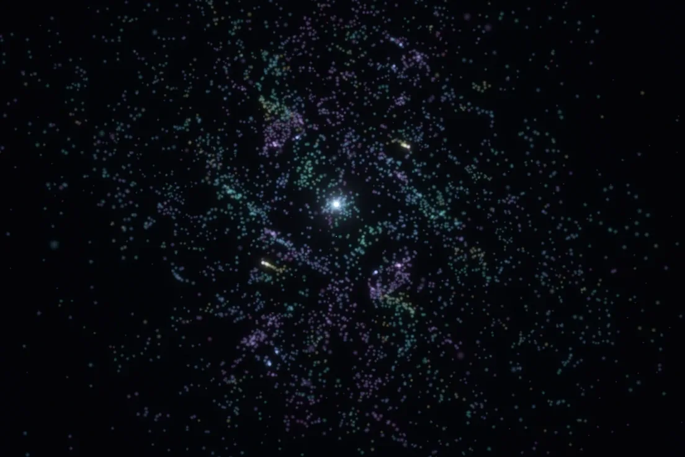
  <div class="in">
    <p class="kicker" data-i18n="hero_kicker"></p>
    <h1 data-i18n="hero_title"></h1>
    <p class="sub" data-i18n="hero_sub"></p>
    <p class="cap" data-i18n="hero_cap"></p>
  </div>
</figure>

<main>
  <div class="how"><h3 data-i18n="how_title"></h3><p data-i18n="how_p"></p></div>

  <section id="regola">
    <div class="text">
      <p class="kicker" data-i18n="s1_kicker"></p>
      <h2 data-i18n="s1_title"></h2>
      <p data-i18n="s1_p1"></p>
      <p data-i18n="s1_p2"></p>
    </div>
    <figure class="anim">
      <div class="ctrl"><button type="button" class="btn" id="animBtn">▶︎ / ❚❚</button></div>
      <canvas id="st" role="img" data-i18n-aria="s1_anim_cap"></canvas>
      <figcaption data-i18n="s1_anim_cap"></figcaption>
    </figure>
    <blockquote data-i18n="s1_quote"></blockquote>
  </section>

  <section id="spaziotempo">
    <div class="text">
      <p class="kicker" data-i18n="s2_kicker"></p>
      <h2 data-i18n="s2_title"></h2>
      <p data-i18n="s2_p1"></p>
      <p data-i18n="s2_p2"></p>
    </div>
    <figure class="plate">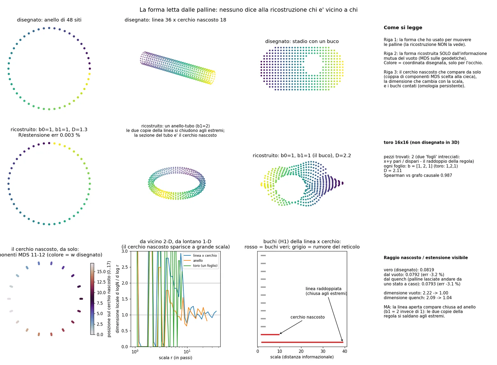<figcaption data-i18n="s2_cap_geo"></figcaption></figure>
    <div class="text" style="margin-top:28px"><p data-i18n="s2_p3"></p></div>
    <figure class="plate">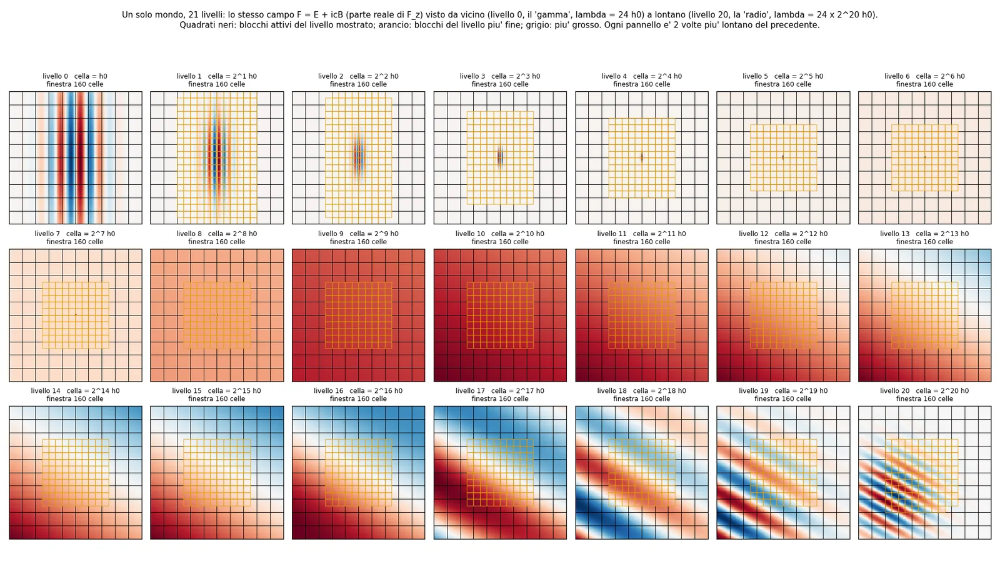<figcaption data-i18n="s2_cap_ladder"></figcaption></figure>
  </section>

  <section id="vuoto">
    <div class="text">
      <p class="kicker" data-i18n="s3_kicker"></p>
      <h2 data-i18n="s3_title"></h2>
      <p data-i18n="s3_p1"></p>
      <p data-i18n="s3_p2"></p>
    </div>
    <div class="stats"><div class="stat good"><div class="v" data-num="0.3%">0,3%</div><div class="l" data-i18n="s3_stat"></div></div></div>
  </section>

  <section id="luce">
    <div class="text">
      <p class="kicker" data-i18n="s4_kicker"></p>
      <h2 data-i18n="s4_title"></h2>
      <p data-i18n="s4_p1"></p>
    </div>
    <div class="pair">
      <figure>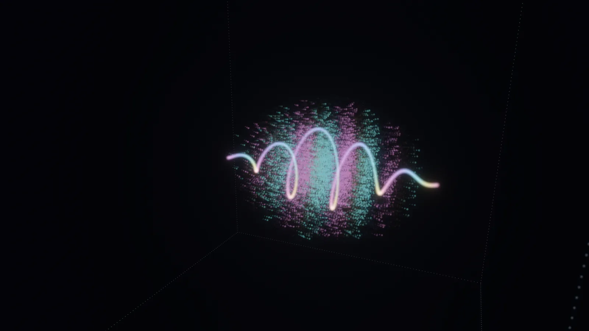<figcaption data-i18n="s4_cap_circ"></figcaption></figure>
      <figure>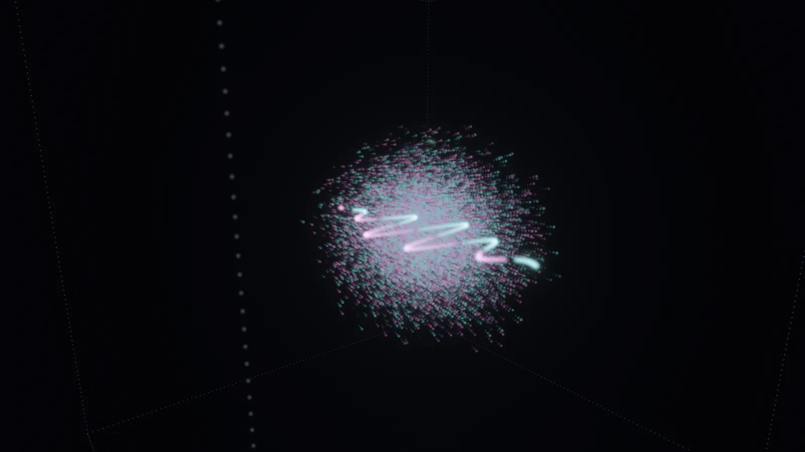<figcaption data-i18n="s4_cap_lin"></figcaption></figure>
    </div>
    <div class="text" style="margin-top:24px"><p data-i18n="s4_p2"></p></div>
  </section>

  <section id="atomo">
    <div class="text">
      <p class="kicker" data-i18n="s5_kicker"></p>
      <h2 data-i18n="s5_title"></h2>
      <p data-i18n="s5_p1"></p>
    </div>
    <figure>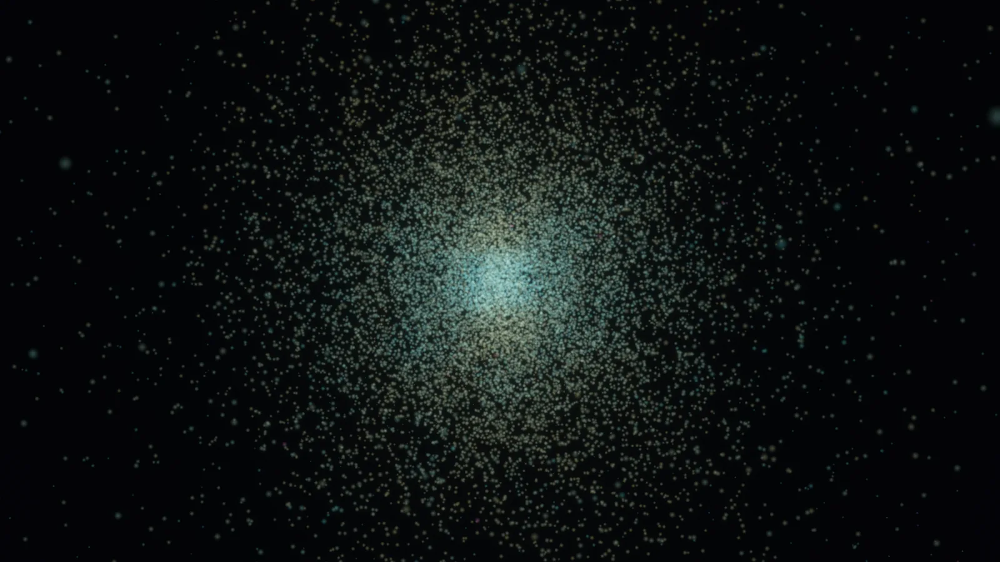<figcaption data-i18n="s5_cap_atomo"></figcaption></figure>
    <div class="gallery">
      <figure>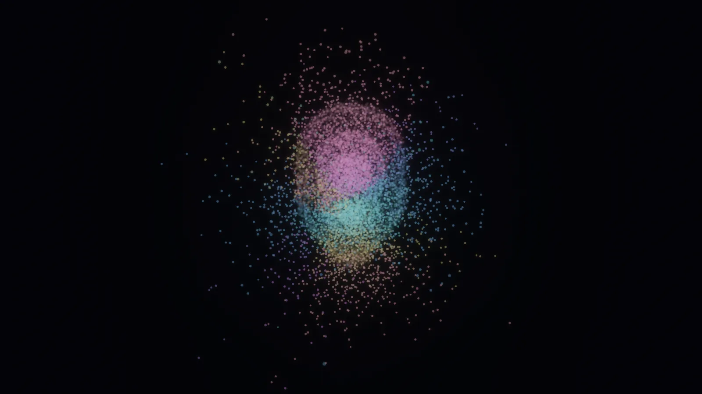<figcaption data-i18n="s5_cap_2p3d"></figcaption></figure>
      <figure>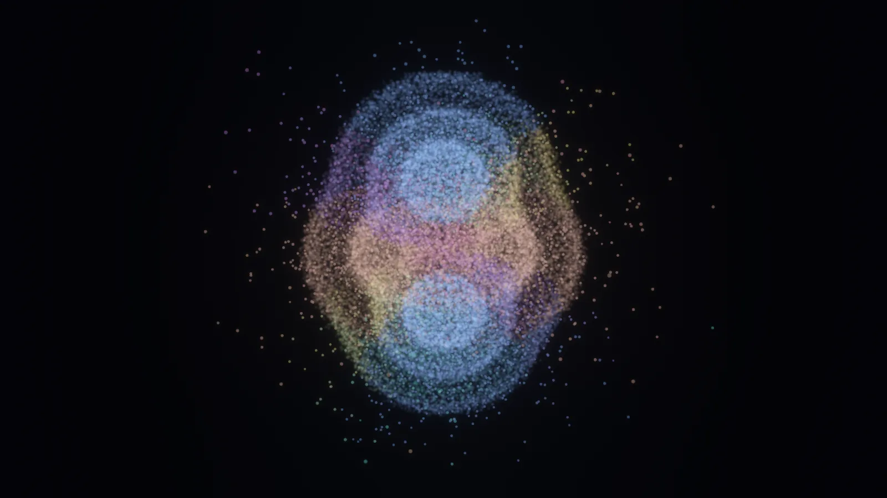<figcaption data-i18n="s5_cap_3d"></figcaption></figure>
      <figure>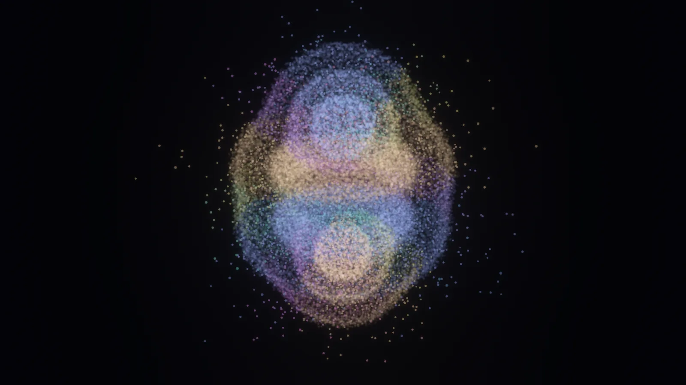<figcaption data-i18n="s5_cap_4f"></figcaption></figure>
      <figure>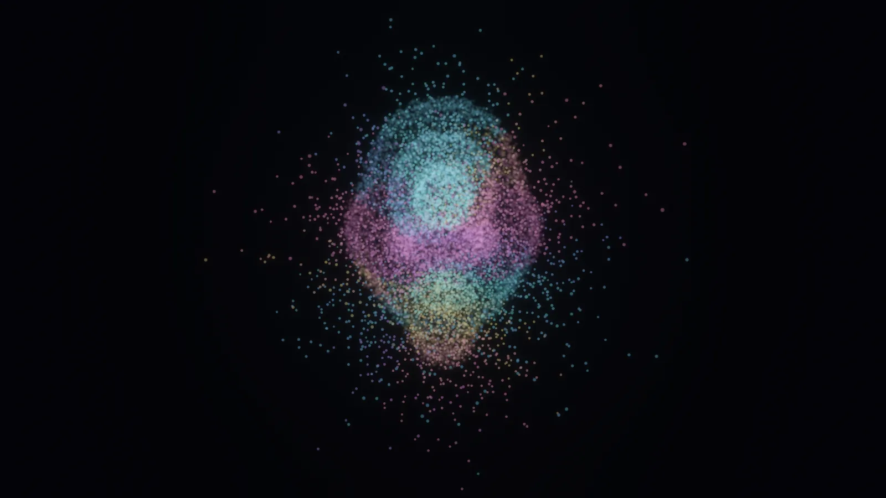<figcaption data-i18n="s5_cap_3d4f"></figcaption></figure>
    </div>
    <div class="text" style="margin-top:28px"><p data-i18n="s5_p2"></p></div>
    <figure>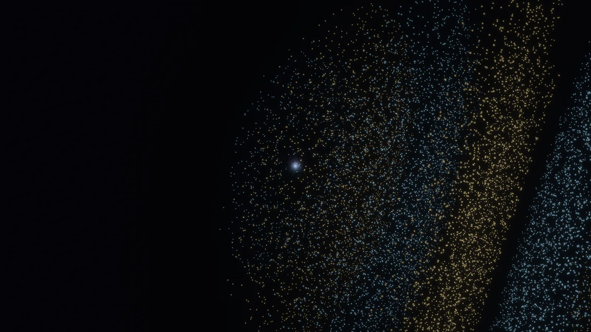<figcaption data-i18n="s5_cap_luce"></figcaption></figure>
    <div class="text" style="margin-top:24px"><p data-i18n="s5_p3"></p></div>
  </section>

  <section id="nucleo">
    <div class="text">
      <p class="kicker" data-i18n="s6_kicker"></p>
      <h2 data-i18n="s6_title"></h2>
      <p data-i18n="s6_p1"></p>
    </div>
    <figure>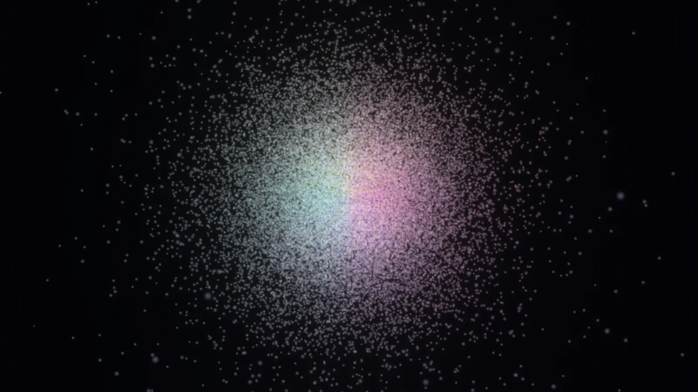<figcaption data-i18n="s6_cap_nucleo"></figcaption></figure>
    <div class="text" style="margin-top:28px"><p data-i18n="s6_p2"></p></div>
    <div class="pair">
      <figure class="plate">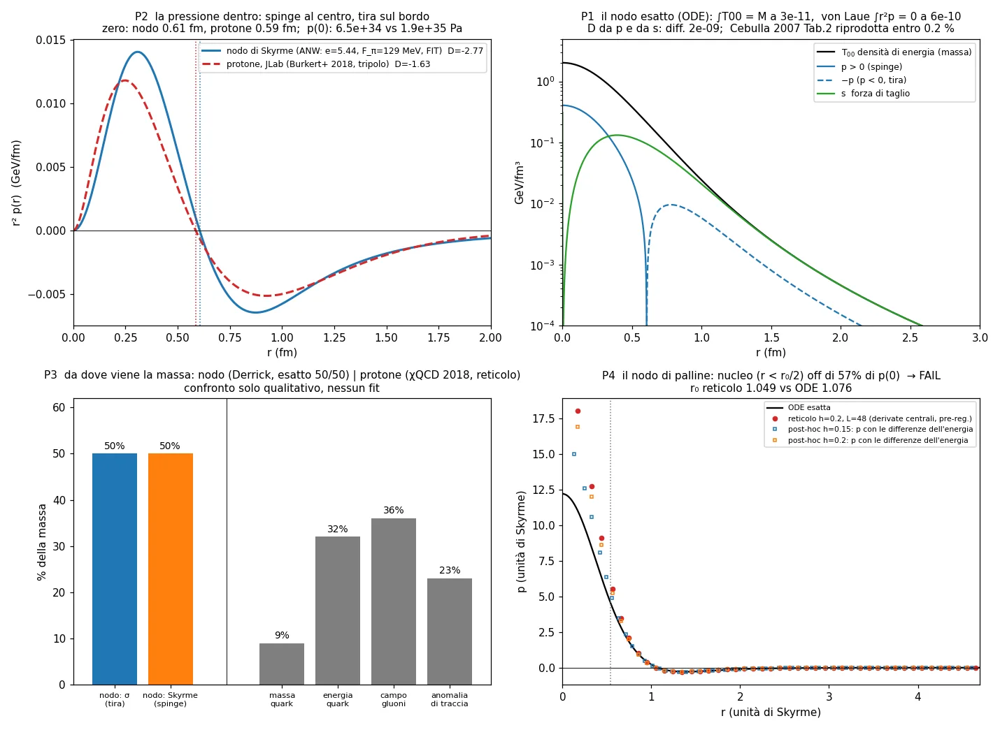<figcaption data-i18n="s6_cap_press"></figcaption></figure>
      <figure class="plate">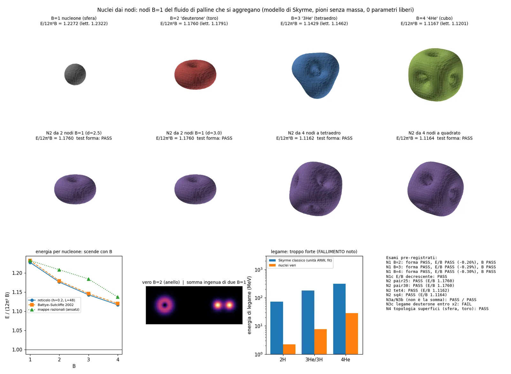<figcaption data-i18n="s6_cap_nuclei"></figcaption></figure>
    </div>
    <div class="text" style="margin-top:24px"><p data-i18n="s6_p3"></p></div>
  </section>

  <section id="glueball">
    <div class="text">
      <p class="kicker" data-i18n="s7_kicker"></p>
      <h2 data-i18n="s7_title"></h2>
      <p data-i18n="s7_p1"></p>
    </div>
    <div class="stats"><div class="stat good"><div class="v" data-num="4%">4%</div><div class="l" data-i18n="s7_stat"></div></div></div>
  </section>

  <section id="zoom">
    <div class="text">
      <p class="kicker" data-i18n="s8_kicker"></p>
      <h2 data-i18n="s8_title"></h2>
      <p data-i18n="s8_p1"></p>
      <p data-i18n="s8_p2"></p>
    </div>
    <div class="stats">
      <div class="stat bad"><div class="v" data-num="68%">68%</div><div class="l" data-i18n="s8_stat_a"></div></div>
      <div class="stat good"><div class="v" data-num="0.08%">0,08%</div><div class="l" data-i18n="s8_stat_b"></div></div>
    </div>
  </section>

  <section id="numeri">
    <div class="text">
      <p class="kicker" data-i18n="chart_kicker"></p>
      <h2 data-i18n="chart_title"></h2>
      <p data-i18n="chart_sub"></p>
    </div>
    <div class="chart" id="chart">
      <ul class="legend" id="legend"></ul>
      <div id="chartSvg" aria-hidden="true"></div>
      <div class="tip" id="tip" hidden></div>
      <div style="display:flex;justify-content:flex-end;margin-top:10px"><button type="button" class="btn" id="tblBtn" aria-expanded="false"></button></div>
      <div class="tablewrap" id="tblWrap" hidden><table id="tbl"></table></div>
    </div>
  </section>

  <section id="onesta">
    <div class="text">
      <p class="kicker" data-i18n="fail_kicker"></p>
      <h2 data-i18n="fail_title"></h2>
      <p data-i18n="fail_p"></p>
    </div>
    <ul class="fails">
      <li data-i18n="f1"></li><li data-i18n="f2"></li><li data-i18n="f3"></li><li data-i18n="f4"></li><li data-i18n="f5"></li><li data-i18n="f6"></li>
    </ul>
  </section>

  <section id="fine">
    <p class="kicker" data-i18n="end_kicker"></p>
    <blockquote data-i18n="end_quote" style="margin-top:0"></blockquote>
    <div class="text" style="margin-top:24px"><p data-i18n="end_p"></p></div>
  </section>
</main>
<footer data-i18n="footer"></footer>

<script>
const I18N = {"it": {"lang_label": "Lingua", "hero_kicker": "Un simulatore costruito da zero · settembre–ottobre 2026", "hero_title": "L'Universo di Palline", "hero_sub": "E se tutto, dalla luce agli atomi fino ai nuclei, fosse fatto di palline identiche che seguono una sola regola? Ci stiamo provando: per la luce, l'elettrone e l'atomo di idrogeno basta già una regola sola; per i nuclei e per gli atomi con più elettroni, per ora, usiamo altre regole di palline. Queste sono le immagini che escono dal nostro programma e i numeri che abbiamo misurato.", "hero_cap": "Un atomo nel nostro simulatore (un nucleo con un solo elettrone). Ogni puntino è una pallina dell'elettrone; i colori sono la fase dell'onda calcolata dalla regola: nessuno li ha disegnati a mano.", "how_title": "Come leggere questa pagina", "how_p": "Tutte le foto vengono dal nostro programma. Ogni numero è stato confrontato con un esperimento vero, con la teoria esatta o con i calcoli di altri fisici sullo stesso modello, e per quasi tutte le prove le soglie per dire \"funziona\" o \"non funziona\" le abbiamo scritte prima di fare i calcoli. Quando qualcosa non torna, lo diciamo.", "s1_kicker": "La regola", "s1_title": "Una regola sola: corri alla velocità della luce, poi ruota", "s1_p1": "Ogni pallina fa sempre due cose: avanza di un passo alla velocità della luce e gira un po' una sua \"lancetta\" interna. Niente altro.", "s1_p2": "Se la pallina va sempre dritta, è luce. Se rimbalza avanti e indietro, è un elettrone: più rimbalza, più pesa. La massa, per noi, è proprio questo: una corsa alla velocità della luce che resta intrappolata in uno zig-zag. L'idea non è nuova (Dirac, Feynman e Penrose ci avevano già pensato): noi l'abbiamo messa in un programma e l'abbiamo messa alla prova.", "s1_anim_cap": "Animazione: in verticale scorre il tempo, in orizzontale lo spazio. La pallina di luce (gialla) va dritta a 45°. La pallina dell'elettrone (azzurra) corre anche lei alla velocità della luce, ma a zig-zag, quindi in media avanza più piano.", "s1_anim_light": "luce", "s1_anim_electron": "elettrone", "s1_anim_time": "tempo", "s1_anim_space": "spazio", "s1_quote": "Tutto corre alla velocità della luce. La luce corre nello spazio, la materia corre nel tempo. La massa è la corsa trattenuta.", "s2_kicker": "Lo spaziotempo", "s2_title": "Lo spazio si può leggere nei legami tra le palline", "s2_p1": "Nella relatività di Einstein ogni cosa si muove nello spaziotempo sempre alla stessa velocità, quella della luce. Cambia solo come la divide: la luce la usa tutta nello spazio, un oggetto fermo la usa tutta nel tempo. Le nostre palline danno un'immagine simile: corrono sempre alla velocità della luce, e nella materia ferma la corsa resta intrappolata in uno zig-zag.", "s2_p2": "Lo spazio, per noi, non si disegna: si legge. Scegliamo una forma, ci facciamo muovere sopra le palline, poi misuriamo quanto ogni coppia di palline è \"legata\" e trasformiamo i legami in distanze. Da questi numeri soltanto, senza dare nessuna mappa al computer, la forma ricompare: un anello, una ciambella (in due copie, perché la nostra regola \"raddoppia\" lo spazio), perfino una piccola dimensione arrotolata e nascosta, con il raggio giusto a meno di circa il 3%. L'idea di leggere lo spazio dai legami viene da altri fisici (Van Raamsdonk, 2010): noi l'abbiamo provata con le nostre palline.", "s2_cap_geo": "A sinistra le forme che abbiamo scelto, a destra quelle ricostruite solo dai legami tra le palline.", "s2_p3": "Il nostro spazio è a livelli, come una matrioska: ogni livello ha celle grandi il doppio di quello sotto, e una cella esiste solo dove c'è qualcosa. Così lo stesso mondo può contenere un'onda minuscola (il nostro \"gamma\") e un'onda \"radio\" un milione di volte più grande usando pochissima memoria (35 MB). Farle muovere insieme l'abbiamo fatto con una \"radio\" mille volte più grande: con un milione servirebbero circa 15 ore di calcolo. Solo per contenerle, non per farle muovere, in principio si può salire fino a mille miliardi di volte.", "s2_cap_ladder": "Dal \"gamma\" alla \"radio\" nello stesso mondo: ogni riquadro è un livello di zoom. Lungo gli assi del reticolo la luce si comporta in modo identico a ogni livello.", "s3_kicker": "Il vuoto", "s3_title": "Il vuoto non è vuoto: è pieno di coppie che si nascondono", "s3_p1": "Nel nostro simulatore il vuoto è un mare di coppie particella–antiparticella (il \"mare di Dirac\", un'idea del 1930), così ben mescolate che ogni misura normale dà zero. Ma se arriva un campo elettrico fortissimo, le coppie vengono strappate fuori e diventano elettroni e positroni veri: l'energia del campo che diventa materia.", "s3_p2": "Quante coppie nascono lo dice una formula famosa (Schwinger, 1951). In un mondo con una sola dimensione di spazio, le nostre palline la ritrovano a meno dello 0,3%: è una conferma che la regola funziona, non una scoperta. E se chiudi il vuoto in una scatola più stretta della \"taglia\" quantistica dell'elettrone (la sua lunghezza Compton, 0,4 miliardesimi di millimetro), le coppie quasi spariscono: anche l'elettrone ha bisogno di spazio per nascere.", "s4_kicker": "La luce", "s4_title": "Un fotone fatto di palline", "s4_p1": "Qui un singolo fotone (per ora un'onda classica con la forma di un fotone) vola in uno spazio vuoto in 3D. Decine di migliaia di palline seguono il suo campo elettrico e magnetico; i colori sono la fase dell'onda. Con la luce polarizzata circolare il campo elettrico disegna un'elica che gira mentre il fotone avanza.", "s4_cap_circ": "Fotone a polarizzazione circolare: l'elica luminosa è il campo elettrico che ruota.", "s4_cap_lin": "Fotone a polarizzazione lineare: le creste avanzano in pila, il campo oscilla in un piano.", "s4_p2": "Misurato nel simulatore: con 16 celle per lunghezza d'onda la velocità del fotone è quella prevista dalla teoria esatta per lo stesso impulso a meno dello 0,09%, la rotazione è ±1,01–1,02 (un fotone deve dare ±1), e il tempo si può far andare all'indietro fino a tornare allo stato di partenza con un errore di 0,0000000000002. Cosa non torna ancora: di lato il fascio si allarga un po' troppo piano (−6% con 16 celle per lunghezza d'onda) e in diagonale la luce del reticolo va più piano.", "s5_kicker": "L'atomo", "s5_title": "Un atomo vivo: l'elettrone non è un pianeta, è una nuvola", "s5_p1": "L'elettrone non è un pallino che orbita. È una nuvola di palline che corrono alla velocità della luce attorno al nucleo, e la forma della nuvola (l'orbitale) nasce dalla regola. Da lontano vedi la forma, da vicino vedi le palline muoversi, portate dalla corrente dell'onda.", "s5_cap_atomo": "L'atomo vivo (un nucleo di neodimio con un solo elettrone: l'idrogeno sarebbe troppo grande per il computer): ogni pallina si muove a ogni istante. I colori sono la fase dell'onda.", "s5_cap_2p3d": "Sovrapposizione di due orbitali (2p e 3d): la nuvola pulsa, perché i due stati \"battono\" tra loro.", "s5_cap_3d": "Orbitale 3d.", "s5_cap_4f": "Orbitale 4f.", "s5_cap_3d4f": "Sovrapposizione 3d + 4f.", "s5_p2": "Quando arriva un impulso di luce dell'energia giusta, la nuvola si mette a oscillare tra lo stato di partenza e un orbitale più alto, e rimanda luce: l'ampiezza della luce rimandata torna entro lo 0,6% con la previsione, mentre la sua frequenza ha mancato del 7% quella scritta prima (il perché lo abbiamo capito dopo). Questa risonanza non l'abbiamo programmata: esce dalla regola, anche se per vederla in pochi minuti la forza tra luce e atomo è 10 volte più grande del vero. E quando misuri dove si trova l'elettrone, compare un solo puntino, estratto a caso con la regola della meccanica quantistica; misurando tante volte, i puntini ricostruiscono la forma dell'orbitale, come negli esperimenti veri.", "s5_p3": "Per l'atomo di idrogeno vero, il nostro \"zoom intelligente\" impara da solo la regola dei blocchi di palline e trova l'energia dello stato fondamentale a meno dello 0,044%, con 4 miliardi di volte meno calcoli di quanti ne servirebbero con le palline fini (il livello 2s sbaglia ancora di circa l'1%).", "s6_kicker": "Il nucleo", "s6_title": "Il protone come un nodo che non si può sciogliere", "s6_p1": "Dentro il nucleo usiamo un fluido di palline fortemente legate, ognuna con una piccola freccia (è il modello di Skyrme, del 1961). Un protone, per noi, è un nodo in questo fluido: una torsione che non si può sciogliere senza strapparlo. Il nodo ha una massa sola, quando corre si accorcia come prevede Einstein (lo abbiamo verificato fino al 60% della velocità limite; all'80% il reticolo lo frena ancora), e un nodo lanciato contro il suo anti-nodo si annulla trasformandosi in onde.", "s6_cap_nucleo": "Il protone visto da vicino nel simulatore: decine di migliaia di palline campionate dalla densità del nodo, che ruota e respira.", "s6_p2": "Dentro il nodo il centro spinge verso fuori e il bordo tira verso dentro, come un elastico. Il punto in cui la pressione cambia segno nel nostro nodo è a 0,605 femtometri; nel protone vero, ricavato dai dati del 2018, è a 0,586 (al centro però il nostro nodo spinge circa 3 volte meno). La massa, in questo quadro, è l'energia di un equilibrio tra una parte del campo che spinge come farebbe la luce e una che tira come un elastico, metà e metà.", "s6_cap_press": "La pressione dentro il nostro nodo (linea) confrontata con quella ricavata dalle misure sul protone vero.", "s6_p3": "E se metti vicini più nodi e li lasci sistemare, da soli si fondono in forme nuove: due diventano una ciambella (il nucleo del deuterio), quattro diventano un cubo (il nucleo dell'elio). Nessuno ha imposto queste forme, che i fisici conoscevano già dagli anni '90: noi le abbiamo ritrovate. Le energie tornano entro lo 0,3% con i calcoli di altri fisici sullo stesso modello.", "s6_cap_nuclei": "Nuclei fatti di nodi: sfera, ciambella, tetraedro, cubo.", "s7_kicker": "Colla che diventa materia", "s7_title": "Grumi di sola \"luce\" che si attacca a sé stessa", "s7_p1": "La luce normale non si tocca: due raggi laser si attraversano. Ma esiste una \"luce\" che si attacca a sé stessa: i gluoni, che tengono insieme i quark dentro i protoni. Nel simulatore palline di questo tipo, senza nessuna massa nella regola, formano grumi con una massa precisa (le glueball). Lo abbiamo fatto in una versione semplificata (due dimensioni di spazio e due \"colori\" invece di tre): la massa del grumo più leggero torna entro circa il 4% dei calcoli dei professionisti per la stessa teoria. Nella realtà le glueball non sono ancora state osservate con certezza.", "s8_kicker": "Lo zoom", "s8_title": "Lo zoom intelligente: vedere tutto senza calcolare tutto", "s8_p1": "Un atomo d'oro, una goccia d'acqua, una mela: nessun computer può seguire ogni pallina. Il nostro metodo funziona come lo zoom dei videogiochi moderni, ma con la fisica: dove guardi da vicino vedi le palline vere, più lontano le palline vengono raggruppate in blocchi che si comportano allo stesso modo. La regola dei blocchi non la scriviamo noi: il programma la impara dalle palline e controlla da solo quanto errore introduce.", "s8_p2": "Sul nodo-protone: con palline grosse ovunque la pressione al centro sbagliava del 68%; con palline fini solo al centro e blocchi fuori, sbaglia dello 0,08%, usando circa 20 volte meno palline dei 4 milioni che servirebbero con palline fini ovunque (e così si arriverebbe appena al 5%). E da quando i blocchi sono 16 volte più grandi delle palline fini, la regola imparata diventa sempre la stessa: lontano dal nodo il campo si ripete uguale a ogni zoom, come un frattale.", "chart_kicker": "I numeri", "chart_title": "Quanto ci avviciniamo ai numeri veri", "chart_sub": "Ogni barra è una misura fatta nel simulatore, confrontata con un esperimento, con la teoria esatta o con i calcoli di altri sullo stesso modello. Non tutte vengono dalla stessa regola: elio, carbonio e H₂ usano un metodo Monte Carlo, i nuclei il modello del nodo. Più la barra è lunga, più cifre giuste: 2 vuol dire un errore dell'1%, 4 vuol dire un errore dello 0,01%.", "chart_axis": "errore rispetto al valore vero", "chart_table": "Mostra la tabella", "chart_hide": "Nascondi la tabella", "th_what": "Cosa", "th_ours": "Palline", "th_ref": "Realtà / teoria", "th_err": "Scarto", "th_level": "Livello", "lv_light": "luce", "lv_atom": "atomi", "lv_mol": "molecole", "lv_nucleus": "nuclei", "lv_vacuum": "vuoto e spaziotempo", "q_lya": "Lunghezza d'onda della riga ultravioletta dell'idrogeno (Lyman-α)", "q_bala": "Colore rosso dell'idrogeno (Balmer-α)", "q_heline": "Lunghezza d'onda della riga ultravioletta dell'elio", "q_he": "Energia dell'atomo di elio", "q_c": "Energia dell'atomo di carbonio (approssimata)", "q_hagg": "Idrogeno con lo zoom intelligente", "q_zoomp": "Pressione al centro del nodo-protone, con lo zoom (contro il calcolo esatto)", "q_bell": "Test di Bell (luce \"legata\" a distanza)", "q_h2vib": "Vibrazione della molecola H₂", "q_d2": "Energia della ciambella di 2 nodi (deuterio), contro altri calcoli del modello", "q_he4": "Energia del cubo di 4 nodi (elio-4), contro altri calcoli del modello", "q_pairs": "Coppie strappate dal vuoto (Schwinger, in 1 dimensione)", "q_c_light": "Velocità di un impulso di luce (contro la teoria esatta)", "q_knot": "Energia del nodo-protone (contro il calcolo esatto)", "q_lorentz": "Accorciamento di Einstein (difetto in una catena di palline, a 0,8 c)", "q_press": "Dove cambia segno la pressione nel protone", "q_mu": "Magnetismo protone/neutrone (rapporto, dal nodo)", "q_glue": "Massa del grumo di colla (glueball, teoria semplificata)", "fail_kicker": "Onestà", "fail_title": "Cosa non funziona ancora", "fail_p": "Questi sono muri contro cui abbiamo sbattuto. Li scriviamo perché un simulatore che nasconde i suoi errori non vale niente.", "f1": "Perché il muone pesa 207 volte l'elettrone e il tau 3477? Nessuna forma nascosta che abbiamo provato lo spiega: la migliore arriva a 1,8.", "f2": "Una forma dello spazio che nasce da sola: tutte le regole del tipo \"chi è forte diventa più forte\" che abbiamo provato spezzano lo spazio in isole invece di costruire una forma.", "f3": "I nuclei fatti di nodi sono legati troppo forte: il deuterio 32 volte più del vero, l'elio-4 11 volte. È un problema noto del modello da decenni: stiamo cercando la \"colla\" che manca.", "f4": "La carica elettrica come giro su un cerchio nascosto funziona, ma il prezzo in massa sbaglia di un fattore 10²¹ (è il vecchio problema dell'idea di Kaluza e Klein).", "f5": "Atomi con molti elettroni dalla regola zig-zag: c'è solo il piano, nessun calcolo è ancora partito (elio e carbonio nel grafico vengono da un altro metodo).", "f6": "Niente scoperte nuove, per ora: ogni numero che torna era già noto. Noi lo ritroviamo con le nostre palline, usando idee in gran parte già note (la regola zig-zag è la \"passeggiata quantistica\" di Dirac, il nodo è il modello di Skyrme). È una prova che il simulatore non sbaglia, non ancora una scoperta.", "end_kicker": "In una frase", "end_quote": "Le palline corrono alla velocità della luce e girano. Il vuoto è un mare pieno di coppie nascoste. Il protone, nel nostro modello, è un nodo che non si scioglie, in equilibrio tra una parte del campo che spinge e una che tira. E lo spazio si può leggere nei legami tra le palline.", "end_p": "Prossimi passi: atomi con tanti elettroni, poi le molecole, l'acqua, il ferro che arrugginisce. L'obiettivo: una regola sola, e uno zoom che impara da solo la regola di ogni livello.", "footer": "Progetto particle_sim · simulatore in Rust e Python · settembre–ottobre 2026 · quasi tutte le prove hanno i criteri scritti prima del calcolo", "s5_cap_luce": "L'atomo dopo essere stato colpito da un impulso di luce: i gusci dorati e azzurri sono le onde di luce che rimanda indietro, calcolate con la stessa regola.", "s3_stat": "differenza massima dalla formula di Schwinger", "s7_stat": "differenza dai supercomputer per il grumo più leggero", "s8_stat_a": "errore sulla pressione al centro del nodo, con palline grosse ovunque", "s8_stat_b": "lo stesso errore con lo zoom intelligente", "chart_better": "più a destra = più preciso"}, "en": {"lang_label": "Language", "hero_kicker": "A simulator built from scratch · September–October 2026", "hero_title": "A Universe Made of Beads", "hero_sub": "What if everything, from light to atoms and all the way to nuclei, were made of identical beads all following one single rule? We're working on it: for light, the electron and the hydrogen atom, a single rule is already enough; for nuclei and for atoms with more than one electron, we use other bead rules for now. These are the pictures that come out of our program and the numbers we have measured.", "hero_cap": "An atom in our simulator (a nucleus with a single electron). Each dot is one of the electron's beads; the colours show the phase of the wave, calculated by the rule. Nobody drew them by hand.", "how_title": "How to read this page", "how_p": "All the pictures come from our program. Every number has been checked against a real experiment, the exact theory, or other physicists' calculations for the same model, and for almost all the tests we wrote down the thresholds for \"it works\" or \"it doesn't work\" before doing the calculations. When something doesn't add up, we say so.", "s1_kicker": "The rule", "s1_title": "A single rule: run at the speed of light, then turn", "s1_p1": "Every bead always does two things: it takes one step forward at the speed of light and turns its own internal \"clock hand\" a little. Nothing else.", "s1_p2": "If the bead always goes straight, it's light. If it bounces back and forth, it's an electron: the more it bounces, the heavier it is. For us, that's exactly what mass is: motion at the speed of light that stays trapped in a zigzag. The idea isn't new (Dirac, Feynman and Penrose had already thought of it): we turned it into a program and put it to the test.", "s1_anim_cap": "Animation: time is on the vertical axis, space on the horizontal axis. The bead of light (yellow) goes straight, at 45°. The electron's bead (light blue) also runs at the speed of light, but in a zigzag, so on average it moves forward more slowly.", "s1_anim_light": "light", "s1_anim_electron": "electron", "s1_anim_time": "time", "s1_anim_space": "space", "s1_quote": "Everything runs at the speed of light. Light runs through space, matter runs through time. Mass is running that's been held back.", "s2_kicker": "Spacetime", "s2_title": "Space can be read from the links between the beads", "s2_p1": "In Einstein's relativity, everything always moves through spacetime at the same speed: the speed of light. The only thing that changes is how that speed is shared between space and time: light uses all of it in space, while an object at rest uses all of it in time. Our beads give a similar picture: they always run at the speed of light, and in matter at rest that motion stays trapped in a zigzag.", "s2_p2": "For us, space isn't drawn: it's read. We choose a shape, let the beads move on it, then measure how strongly each pair of beads is \"linked\" and turn those links into distances. From these numbers alone, without giving the computer any map, the shape reappears: a ring, a doughnut (in two copies, because our rule \"doubles\" space), even a small hidden dimension curled up on itself, with its radius correct to within about 3%. The idea of reading space from links comes from other physicists (Van Raamsdonk, 2010): we tried it out with our beads.", "s2_cap_geo": "On the left, the shapes we chose; on the right, the same shapes rebuilt using only the links between the beads.", "s2_p3": "Our space is built in levels, like a Russian nesting doll: each level has cells twice as big as the level below, and a cell only exists where there's something in it. This way the same world can hold a tiny wave (our \"gamma\") and a \"radio\" wave a million times bigger, while using very little memory (35 MB). We have actually made them move together with a \"radio\" wave a thousand times bigger; with one a million times bigger, it would take about 15 hours of computing. Just to hold them, without making them move, in principle you could go up to a trillion times bigger.", "s2_cap_ladder": "From \"gamma\" to \"radio\" in the same world: each panel is one zoom level. Along the grid's axes, light behaves in exactly the same way at every level.", "s3_kicker": "The vacuum", "s3_title": "The vacuum isn't empty: it's full of pairs in hiding", "s3_p1": "In our simulator the vacuum is a sea of particle–antiparticle pairs (the \"Dirac sea\", an idea from 1930), mixed so well that every ordinary measurement gives zero. But if a very strong electric field comes along, the pairs are torn out and become real electrons and positrons (the electron's antiparticles): the energy of the field turning into matter.", "s3_p2": "A famous formula (Schwinger, 1951) tells you how many pairs are created. In a world with only one dimension of space, our beads reproduce it to within 0.3%: this confirms that the rule works, it isn't a discovery. And if you shut the vacuum inside a box narrower than the electron's quantum \"size\" (its Compton wavelength, 0.4 billionths of a millimetre), the pairs almost disappear: even the electron needs room to be born.", "s4_kicker": "Light", "s4_title": "A photon made of beads", "s4_p1": "Here a single photon (for now, a classical wave shaped like a photon) flies through empty 3D space. Tens of thousands of beads follow its electric and magnetic fields; the colours show the phase of the wave. With circularly polarised light, the electric field traces out a helix (a corkscrew shape) that turns as the photon moves forward.", "s4_cap_circ": "Circularly polarised photon: the glowing helix is the rotating electric field.", "s4_cap_lin": "Linearly polarised photon: the crests move forward one behind the other, and the field oscillates in a single plane.", "s4_p2": "Measured in the simulator: with 16 cells per wavelength, the photon's speed matches the speed the exact theory predicts for the same pulse to within 0.09%; the rotation (spin) comes out as ±1.01–1.02 (a photon must give ±1); and time can be run backwards all the way back to the starting state with an error of 0.0000000000002. What isn't right yet: sideways, the beam spreads out a little too slowly (−6% with 16 cells per wavelength), and light on the grid travels more slowly along the diagonals.", "s5_kicker": "The atom", "s5_title": "A living atom: the electron isn't a planet, it's a cloud", "s5_p1": "The electron isn't a little dot going round in orbit. It's a cloud of beads running at the speed of light around the nucleus, and the shape of the cloud (the orbital) comes out of the rule. From far away you see the shape; up close you see the beads moving, carried along by the flow of the wave.", "s5_cap_atomo": "The living atom (a neodymium nucleus with a single electron: a hydrogen atom would be too big for the computer). Every bead is moving at every instant. The colours show the phase of the wave.", "s5_cap_2p3d": "Superposition of two orbitals (2p and 3d): the cloud pulses because the two states \"beat\" against each other.", "s5_cap_3d": "3d orbital.", "s5_cap_4f": "4f orbital.", "s5_cap_3d4f": "3d + 4f superposition.", "s5_p2": "When a pulse of light with the right energy arrives, the cloud starts oscillating between its starting state and a higher orbital, and sends light back out. The amplitude of the light sent back agrees with the prediction to within 0.6%, while its frequency was 7% off the value we had written down in advance (we worked out why afterwards). We didn't program this resonance: it comes out of the rule, even though, to let us see it in just a few minutes, the force between light and atom is 10 times stronger than in real life. And when you measure where the electron is, a single dot appears, picked at random following the rules of quantum mechanics; if you measure many times, the dots build up the shape of the orbital, just like in real experiments.", "s5_p3": "For the real hydrogen atom, our \"smart zoom\" learns the rule for blocks of beads on its own and finds the ground-state energy (the energy of the lowest state) to within 0.044%, using 4 billion times fewer calculations than it would take with small beads everywhere (the 2s level is still off by about 1%).", "s6_kicker": "The nucleus", "s6_title": "The proton as a knot that can't be untied", "s6_p1": "Inside the nucleus we use a fluid of tightly bound beads, each carrying a small arrow (this is the Skyrme model, from 1961). For us, a proton is a knot in this fluid: a twist that can't be undone without tearing the fluid. The knot has a single, definite mass; when it moves, it gets shorter, just as Einstein predicted (length contraction: we checked it up to 60% of the speed of light; at 80% the grid still slows it down), and when a knot is thrown at its anti-knot, the two annihilate and turn into waves.", "s6_cap_nucleo": "The proton seen up close in the simulator: tens of thousands of beads scattered according to the density of the knot, which rotates and \"breathes\".", "s6_p2": "Inside the knot, the centre pushes outwards and the edge pulls inwards, like an elastic band. In our knot, the point where the pressure changes sign (from pushing to pulling) is at 0.605 femtometres (a femtometre is a millionth of a billionth of a metre); in the real proton, worked out from 2018 data, it's at 0.586 (at the centre, though, our knot pushes about 3 times less). In this picture, mass is the energy of a balance between one part of the field that pushes, the way light would, and another part that pulls like an elastic band, split fifty-fifty.", "s6_cap_press": "The pressure inside our knot (the line) compared with the pressure worked out from measurements on the real proton.", "s6_p3": "And if you put several knots close together and let them settle, they merge on their own into new shapes: two become a doughnut (the nucleus of deuterium, or heavy hydrogen), four become a cube (the nucleus of helium). Nobody forced these shapes; physicists have known about them since the 1990s, and we found them again. The energies agree to within 0.3% with other physicists' calculations for the same model.", "s6_cap_nuclei": "Nuclei made of knots: sphere, doughnut, tetrahedron, cube.", "s7_kicker": "Glue that becomes matter", "s7_title": "Lumps made of nothing but \"light\" that sticks to itself", "s7_p1": "Ordinary light doesn't bump into itself: two laser beams pass straight through each other. But there is a kind of \"light\" that sticks to itself: gluons, which hold the quarks together inside protons. In the simulator, beads of this kind, with no mass at all in the rule, form lumps that have a definite mass (glueballs). We did this in a simplified version (two dimensions of space and two \"colours\" instead of three; \"colour\" is the strong force's version of electric charge): the mass of the lightest lump agrees to within about 4% with professional physicists' calculations for the same theory. In the real world, glueballs have not yet been observed for certain.", "s8_kicker": "The zoom", "s8_title": "The smart zoom: seeing everything without calculating everything", "s8_p1": "A gold atom, a drop of water, an apple: no computer can follow every bead. Our method works like the zoom in modern video games, but with physics: wherever you look up close, you see the real beads; further away, the beads are grouped into blocks that behave the same way. We don't write the rule for the blocks ourselves: the program learns it from the beads and checks on its own how much error it introduces.", "s8_p2": "On the proton knot: with big beads everywhere, the pressure at the centre was 68% off; with small beads only at the centre and blocks outside, it's off by 0.08%, using about 20 times fewer beads than the 4 million you would need with small beads everywhere (and even those would only bring the error down to 5%). And from the point where the blocks are 16 times bigger than the small beads, the learned rule always comes out the same: far from the knot, the field repeats itself identically at every zoom level, like a fractal.", "chart_kicker": "The numbers", "chart_title": "How close we get to the real numbers", "chart_sub": "Each bar is a measurement made in the simulator, compared with an experiment, the exact theory, or other physicists' calculations for the same model. They don't all come from the same rule: helium, carbon and H₂ use a Monte Carlo method (a technique based on random sampling), and the nuclei use the knot model. The longer the bar, the more digits we get right: 2 means a 1% error, 4 means a 0.01% error.", "chart_axis": "error vs the true value", "chart_table": "Show the table", "chart_hide": "Hide the table", "th_what": "What", "th_ours": "Beads", "th_ref": "Reality / theory", "th_err": "Difference", "th_level": "Level", "lv_light": "light", "lv_atom": "atoms", "lv_mol": "molecules", "lv_nucleus": "nuclei", "lv_vacuum": "vacuum and spacetime", "q_lya": "Wavelength of hydrogen's ultraviolet line (Lyman-α)", "q_bala": "Hydrogen's red colour (Balmer-α)", "q_heline": "Wavelength of helium's ultraviolet line", "q_he": "Energy of the helium atom", "q_c": "Energy of the carbon atom (approximate)", "q_hagg": "Hydrogen with the smart zoom", "q_zoomp": "Pressure at the centre of the proton knot, with the zoom (vs the exact calculation)", "q_bell": "Bell test (light \"entangled\" across a distance)", "q_h2vib": "Vibration of the H₂ molecule", "q_d2": "Energy of the 2-knot doughnut (deuterium), vs other calculations of the same model", "q_he4": "Energy of the 4-knot cube (helium-4), vs other calculations of the same model", "q_pairs": "Pairs torn out of the vacuum (Schwinger, in 1 dimension)", "q_c_light": "Speed of a light pulse (vs the exact theory)", "q_knot": "Energy of the proton knot (vs the exact calculation)", "q_lorentz": "Einstein's length contraction (a defect in a chain of beads, at 0.8 c)", "q_press": "Where the pressure inside the proton changes sign", "q_mu": "Proton/neutron magnetism (ratio, from the knot)", "q_glue": "Mass of the glue lump (glueball, simplified theory)", "fail_kicker": "Honesty", "fail_title": "What doesn't work yet", "fail_p": "These are the walls we've run into. We write them down because a simulator that hides its mistakes is worthless.", "f1": "Why does the muon weigh 207 times as much as the electron, and the tau 3477 times as much? (Both are heavier cousins of the electron.) None of the hidden shapes we've tried can explain it: the best one only gets to 1.8.", "f2": "A shape for space that emerges on its own: every rule of the \"the strong get stronger\" kind that we've tried breaks space up into islands instead of building a shape.", "f3": "The nuclei made of knots are bound too tightly: deuterium 32 times more than in reality, helium-4 11 times more. This problem with the model has been known for decades: we're looking for the missing \"glue\".", "f4": "Treating electric charge as going round a hidden circle works, but the price in mass is wrong by a factor of 10²¹ (this is the old problem with Kaluza and Klein's idea).", "f5": "Atoms with many electrons from the zigzag rule: so far there's only a plan, and no calculation has been started yet (helium and carbon in the chart come from a different method).", "f6": "No new discoveries, for now: every number that matches was already known. We reproduce it with our beads, mostly using ideas that already existed (the zigzag rule is Dirac's \"quantum walk\", the knot is the Skyrme model). It's evidence that the simulator gets things right, not a discovery yet.", "end_kicker": "In a nutshell", "end_quote": "The beads run at the speed of light and turn. The vacuum is a sea full of hidden pairs. In our model, the proton is a knot that won't come undone, balanced between one part of the field that pushes and another that pulls. And space can be read from the links between the beads.", "end_p": "Next steps: atoms with many electrons, then molecules, water, rusting iron. The goal: a single rule, and a zoom that learns the rule for each level on its own.", "footer": "particle_sim project · simulator in Rust and Python · September–October 2026 · for almost all the tests, the criteria were written before the calculation", "s5_cap_luce": "The atom after being hit by a pulse of light: the gold and blue shells are the light waves it sends back, computed with the same rule.", "s3_stat": "largest gap from Schwinger's formula", "s7_stat": "gap from supercomputer results for the lightest lump", "s8_stat_a": "error on the pressure at the centre of the knot, with big beads everywhere", "s8_stat_b": "the same error with the smart zoom", "chart_better": "further right = more precise"}, "es": {"lang_label": "Idioma", "hero_kicker": "Un simulador construido desde cero · septiembre–octubre de 2026", "hero_title": "El Universo de Bolitas", "hero_sub": "¿Y si todo, desde la luz hasta los átomos y los núcleos, estuviera hecho de bolitas idénticas que siguen una sola regla? Lo estamos intentando: para la luz, el electrón y el átomo de hidrógeno ya basta con una sola regla; para los núcleos y los átomos con más electrones, de momento, usamos otras reglas de bolitas. Estas son las imágenes que salen de nuestro programa y los números que hemos medido.", "hero_cap": "Un átomo en nuestro simulador (un núcleo con un solo electrón). Cada puntito es una bolita del electrón; los colores son la fase de la onda calculada por la regla: nadie los ha dibujado a mano.", "how_title": "Cómo leer esta página", "how_p": "Todas las fotos salen de nuestro programa. Cada número se ha comparado con un experimento real, con la teoría exacta o con los cálculos de otros físicos sobre el mismo modelo, y en casi todas las pruebas dejamos por escrito, antes de hacer los cálculos, los límites para decir \"funciona\" o \"no funciona\". Cuando algo no cuadra, lo decimos.", "s1_kicker": "La regla", "s1_title": "Una sola regla: corre a la velocidad de la luz y luego gira", "s1_p1": "Cada bolita hace siempre dos cosas: avanza un paso a la velocidad de la luz y gira un poco su propia \"manecilla\" interna. Nada más.", "s1_p2": "Si la bolita va siempre recta, es luz. Si rebota de un lado a otro, es un electrón: cuanto más rebota, más pesa. La masa, para nosotros, es justo eso: una carrera a la velocidad de la luz que se queda atrapada en un zigzag. La idea no es nueva (Dirac, Feynman y Penrose ya habían pensado en ella): nosotros la hemos metido en un programa y la hemos puesto a prueba.", "s1_anim_cap": "Animación: el tiempo avanza en vertical y el espacio va en horizontal. La bolita de luz (amarilla) va recta, a 45°. La bolita del electrón (azul claro) también corre a la velocidad de la luz, pero en zigzag, así que en promedio avanza más despacio.", "s1_anim_light": "luz", "s1_anim_electron": "electrón", "s1_anim_time": "tiempo", "s1_anim_space": "espacio", "s1_quote": "Todo corre a la velocidad de la luz. La luz corre en el espacio, la materia corre en el tiempo. La masa es la carrera retenida.", "s2_kicker": "El espacio-tiempo", "s2_title": "El espacio se puede leer en los vínculos entre las bolitas", "s2_p1": "En la relatividad de Einstein, todo se mueve en el espacio-tiempo siempre a la misma velocidad: la de la luz. Lo único que cambia es cómo se reparte: la luz la usa toda en el espacio; un objeto quieto, toda en el tiempo. Nuestras bolitas ofrecen una imagen parecida: corren siempre a la velocidad de la luz, y en la materia quieta la carrera se queda atrapada en un zigzag.", "s2_p2": "El espacio, para nosotros, no se dibuja: se lee. Elegimos una forma, hacemos que las bolitas se muevan sobre ella, y luego medimos cuánto está \"vinculado\" cada par de bolitas y convertimos esos vínculos en distancias. Solo a partir de estos números, sin darle ningún mapa al ordenador, la forma reaparece: un anillo, una rosquilla (por duplicado, porque nuestra regla \"duplica\" el espacio) e incluso una pequeña dimensión enrollada y escondida, cuyo radio sale correcto con un error de menos del 3 %, aproximadamente. La idea de leer el espacio a partir de los vínculos viene de otros físicos (Van Raamsdonk, 2010): nosotros la hemos probado con nuestras bolitas.", "s2_cap_geo": "A la izquierda, las formas que elegimos; a la derecha, las reconstruidas solo a partir de los vínculos entre las bolitas.", "s2_p3": "Nuestro espacio está organizado en niveles, como una matrioska: cada nivel tiene celdas el doble de grandes que las del nivel de abajo, y una celda solo existe donde hay algo. Así, el mismo mundo puede contener una onda minúscula (nuestro \"gamma\") y una onda de \"radio\" un millón de veces más grande usando poquísima memoria (35 MB). Hacer que se muevan juntas lo hemos conseguido con una \"radio\" mil veces más grande; con una un millón de veces más grande harían falta unas 15 horas de cálculo. Solo para contenerlas, sin hacer que se muevan, en principio se puede llegar hasta un billón (un millón de millones) de veces.", "s2_cap_ladder": "Del \"gamma\" a la \"radio\" en el mismo mundo: cada recuadro es un nivel de zoom. A lo largo de los ejes de la cuadrícula, la luz se comporta exactamente igual en cada nivel.", "s3_kicker": "El vacío", "s3_title": "El vacío no está vacío: está lleno de pares que se esconden", "s3_p1": "En nuestro simulador, el vacío es un mar de pares partícula–antipartícula (el \"mar de Dirac\", una idea de 1930), tan bien mezclados que cualquier medición normal da cero. Pero si llega un campo eléctrico fortísimo, los pares salen arrancados y se convierten en electrones y positrones de verdad: la energía del campo se transforma en materia.", "s3_p2": "Hay una fórmula famosa que dice cuántos pares nacen (Schwinger, 1951). En un mundo con una sola dimensión de espacio, nuestras bolitas la reproducen con un error de menos del 0,3 %: es una confirmación de que la regla funciona, no un descubrimiento. Y si encierras el vacío en una caja más estrecha que el \"tamaño\" cuántico del electrón (su longitud de Compton, 0,4 milmillonésimas de milímetro), los pares casi desaparecen: el electrón también necesita espacio para nacer.", "s4_kicker": "La luz", "s4_title": "Un fotón hecho de bolitas", "s4_p1": "Aquí un solo fotón (de momento, una onda clásica con la forma de un fotón) vuela por un espacio vacío en 3D. Decenas de miles de bolitas siguen su campo eléctrico y magnético; los colores son la fase de la onda. Con la luz polarizada circularmente, el campo eléctrico dibuja una hélice que gira mientras el fotón avanza.", "s4_cap_circ": "Fotón con polarización circular: la hélice luminosa es el campo eléctrico que gira.", "s4_cap_lin": "Fotón con polarización lineal: las crestas avanzan una detrás de otra y el campo oscila en un plano.", "s4_p2": "Medido en el simulador: con 16 celdas por longitud de onda, la velocidad del fotón coincide con la que predice la teoría exacta para el mismo momento lineal, con un error de menos del 0,09 %; la rotación es de ±1,01–1,02 (un fotón debe dar ±1), y se puede hacer correr el tiempo hacia atrás hasta volver al estado inicial con un error de 0,0000000000002. Lo que todavía no cuadra: hacia los lados, el haz se ensancha un poco demasiado despacio (−6 % con 16 celdas por longitud de onda), y en diagonal la luz va más despacio en la cuadrícula.", "s5_kicker": "El átomo", "s5_title": "Un átomo vivo: el electrón no es un planeta, es una nube", "s5_p1": "El electrón no es una bolita que gira en órbita. Es una nube de bolitas que corren a la velocidad de la luz alrededor del núcleo, y la forma de la nube (el orbital) sale de la regla. De lejos ves la forma; de cerca ves cómo se mueven las bolitas, llevadas por la corriente de la onda.", "s5_cap_atomo": "El átomo vivo (un núcleo de neodimio con un solo electrón: el hidrógeno sería demasiado grande para el ordenador): cada bolita se mueve en todo momento. Los colores son la fase de la onda.", "s5_cap_2p3d": "Superposición de dos orbitales (2p y 3d): la nube late porque los dos estados producen \"batimientos\" entre sí.", "s5_cap_3d": "Orbital 3d.", "s5_cap_4f": "Orbital 4f.", "s5_cap_3d4f": "Superposición 3d + 4f.", "s5_p2": "Cuando llega un pulso de luz con la energía adecuada, la nube se pone a oscilar entre el estado inicial y un orbital más alto, y reemite luz: la amplitud de la luz reemitida coincide con la predicción con un error de menos del 0,6 %, mientras que su frecuencia se desvió un 7 % de la que habíamos escrito de antemano (el porqué lo entendimos después). Esta resonancia no la hemos programado: sale de la regla, aunque, para poder verla en pocos minutos, la fuerza entre la luz y el átomo es 10 veces mayor que la real. Y cuando mides dónde está el electrón, aparece un solo puntito, elegido al azar según la regla de la mecánica cuántica; si mides muchas veces, los puntitos reconstruyen la forma del orbital, como en los experimentos reales.", "s5_p3": "Para el átomo de hidrógeno real, nuestro \"zoom inteligente\" aprende por sí solo la regla de los bloques de bolitas y encuentra la energía del estado fundamental con un error de menos del 0,044 %, con 4000 millones de veces menos cálculos de los que harían falta usando solo bolitas pequeñas (en el nivel 2s todavía hay un error de alrededor del 1 %).", "s6_kicker": "El núcleo", "s6_title": "El protón como un nudo que no se puede deshacer", "s6_p1": "Dentro del núcleo usamos un fluido de bolitas fuertemente unidas, cada una con una pequeña flecha (es el modelo de Skyrme, de 1961). Un protón, para nosotros, es un nudo en este fluido: una torsión que no se puede deshacer sin romperlo. El nudo tiene una sola masa; cuando corre, se acorta como predice Einstein (lo hemos comprobado hasta el 60 % de la velocidad límite; al 80 %, la cuadrícula todavía lo frena), y un nudo lanzado contra su antinudo se aniquila y se convierte en ondas.", "s6_cap_nucleo": "El protón visto de cerca en el simulador: decenas de miles de bolitas elegidas al azar según la densidad del nudo, que gira y respira.", "s6_p2": "Dentro del nudo, el centro empuja hacia fuera y el borde tira hacia dentro, como una goma elástica. En nuestro nudo, el punto en el que la presión cambia de signo está a 0,605 femtómetros; en el protón real, calculado a partir de los datos de 2018, está a 0,586 (aunque en el centro nuestro nudo empuja unas 3 veces menos). La masa, en esta imagen, es la energía de un equilibrio entre una parte del campo que empuja como lo haría la luz y otra que tira como una goma elástica, a partes iguales.", "s6_cap_press": "La presión dentro de nuestro nudo (línea) comparada con la obtenida a partir de las mediciones del protón real.", "s6_p3": "Y si pones varios nudos cerca y dejas que se acomoden, se fusionan solos en formas nuevas: dos se convierten en una rosquilla (el núcleo del deuterio) y cuatro, en un cubo (el núcleo del helio). Nadie ha impuesto estas formas, que los físicos ya conocían desde los años 90: nosotros las hemos vuelto a encontrar. Las energías coinciden con los cálculos de otros físicos sobre el mismo modelo con un error de menos del 0,3 %.", "s6_cap_nuclei": "Núcleos hechos de nudos: esfera, rosquilla, tetraedro, cubo.", "s7_kicker": "Pegamento que se convierte en materia", "s7_title": "Grumos hechos solo de \"luz\" que se pega a sí misma", "s7_p1": "La luz normal no se toca a sí misma: dos rayos láser se cruzan sin chocar. Pero existe una \"luz\" que se pega a sí misma: los gluones, que mantienen unidos los quarks dentro de los protones. En el simulador, bolitas de este tipo, sin ninguna masa en la regla, forman grumos con una masa precisa (las glueballs, o \"bolas de pegamento\"). Lo hemos hecho en una versión simplificada (dos dimensiones de espacio y dos \"colores\" en lugar de tres): la masa del grumo más ligero coincide, con un margen de alrededor del 4 %, con los cálculos de los profesionales para la misma teoría. En la realidad, las glueballs todavía no se han observado con certeza.", "s8_kicker": "El zoom", "s8_title": "El zoom inteligente: verlo todo sin calcularlo todo", "s8_p1": "Un átomo de oro, una gota de agua, una manzana: ningún ordenador puede seguir todas y cada una de sus bolitas. Nuestro método funciona como el zoom de los videojuegos modernos, pero con la física: donde miras de cerca ves las bolitas reales; más lejos, las bolitas se agrupan en bloques que se comportan de la misma manera. La regla de los bloques no la escribimos nosotros: el programa la aprende de las bolitas y comprueba por sí mismo cuánto error introduce.", "s8_p2": "En el nudo-protón: con bolitas grandes en todas partes, la presión en el centro tenía un error del 68 %; con bolitas pequeñas solo en el centro y bloques fuera, el error baja al 0,08 %, usando unas 20 veces menos bolitas que los 4 millones que harían falta con bolitas pequeñas en todas partes (y aun así solo se bajaría a un error del 5 %). Y a partir de bloques 16 veces más grandes que las bolitas pequeñas, la regla aprendida pasa a ser siempre la misma: lejos del nudo, el campo se repite igual en cada zoom, como un fractal.", "chart_kicker": "Los números", "chart_title": "Cuánto nos acercamos a los números reales", "chart_sub": "Cada barra es una medida hecha en el simulador, comparada con un experimento, con la teoría exacta o con los cálculos de otros físicos sobre el mismo modelo. No todas salen de la misma regla: el helio, el carbono y el H₂ usan un método Monte Carlo, y los núcleos, el modelo del nudo. Cuanto más larga es la barra, más cifras correctas: 2 significa un error del 1 %; 4, un error del 0,01 %.", "chart_axis": "error respecto al valor real", "chart_table": "Mostrar la tabla", "chart_hide": "Ocultar la tabla", "th_what": "Qué", "th_ours": "Bolitas", "th_ref": "Realidad / teoría", "th_err": "Diferencia", "th_level": "Nivel", "lv_light": "luz", "lv_atom": "átomos", "lv_mol": "moléculas", "lv_nucleus": "núcleos", "lv_vacuum": "vacío y espacio-tiempo", "q_lya": "Longitud de onda de la línea ultravioleta del hidrógeno (Lyman-α)", "q_bala": "Color rojo del hidrógeno (Balmer-α)", "q_heline": "Longitud de onda de la línea ultravioleta del helio", "q_he": "Energía del átomo de helio", "q_c": "Energía del átomo de carbono (aproximada)", "q_hagg": "Hidrógeno con el zoom inteligente", "q_zoomp": "Presión en el centro del nudo-protón, con el zoom (frente al cálculo exacto)", "q_bell": "Test de Bell (luz \"entrelazada\" a distancia)", "q_h2vib": "Vibración de la molécula de H₂", "q_d2": "Energía de la rosquilla de 2 nudos (deuterio), frente a otros cálculos del modelo", "q_he4": "Energía del cubo de 4 nudos (helio-4), frente a otros cálculos del modelo", "q_pairs": "Pares arrancados del vacío (Schwinger, en 1 dimensión)", "q_c_light": "Velocidad de un pulso de luz (frente a la teoría exacta)", "q_knot": "Energía del nudo-protón (frente al cálculo exacto)", "q_lorentz": "Acortamiento de Einstein (defecto en una cadena de bolitas, a 0,8 c)", "q_press": "Dónde cambia de signo la presión en el protón", "q_mu": "Magnetismo protón/neutrón (cociente, a partir del nudo)", "q_glue": "Masa del grumo de pegamento (glueball, teoría simplificada)", "fail_kicker": "Honestidad", "fail_title": "Lo que todavía no funciona", "fail_p": "Estos son muros contra los que nos hemos estrellado. Los contamos porque un simulador que esconde sus errores no vale nada.", "f1": "¿Por qué el muón pesa 207 veces lo que el electrón, y el tau, 3477 veces? Ninguna de las formas escondidas que hemos probado lo explica: la mejor solo llega a 1,8.", "f2": "Una forma del espacio que nazca sola: todas las reglas del tipo \"el fuerte se hace más fuerte\" que hemos probado rompen el espacio en islas, en lugar de construir una forma.", "f3": "Los núcleos hechos de nudos están unidos con demasiada fuerza: el deuterio, 32 veces más que en la realidad; el helio-4, 11 veces más. Es un problema conocido del modelo desde hace décadas: estamos buscando el \"pegamento\" que falta.", "f4": "La carga eléctrica entendida como dar vueltas en un círculo escondido funciona, pero el precio en masa se equivoca en un factor de 10²¹ (es el viejo problema de la idea de Kaluza y Klein).", "f5": "Átomos con muchos electrones a partir de la regla zigzag: solo tenemos el plan; todavía no ha empezado ningún cálculo (el helio y el carbono del gráfico salen de otro método).", "f6": "No hay descubrimientos nuevos, de momento: cada número que cuadra ya se conocía. Nosotros lo volvemos a encontrar con nuestras bolitas, usando ideas en gran parte ya conocidas (la regla zigzag es la \"caminata cuántica\" de Dirac; el nudo es el modelo de Skyrme). Es una prueba de que el simulador no se equivoca, pero todavía no es un descubrimiento.", "end_kicker": "En una frase", "end_quote": "Las bolitas corren a la velocidad de la luz y giran. El vacío es un mar lleno de pares escondidos. El protón, en nuestro modelo, es un nudo que no se deshace, en equilibrio entre una parte del campo que empuja y otra que tira. Y el espacio se puede leer en los vínculos entre las bolitas.", "end_p": "Próximos pasos: átomos con muchos electrones, luego las moléculas, el agua, el hierro que se oxida. El objetivo: una sola regla y un zoom que aprenda por sí solo la regla de cada nivel.", "footer": "Proyecto particle_sim · simulador en Rust y Python · septiembre–octubre de 2026 · en casi todas las pruebas, los criterios se escribieron antes del cálculo", "s5_cap_luce": "El átomo después de recibir un pulso de luz: las capas doradas y azules son las ondas de luz que devuelve, calculadas con la misma regla.", "s3_stat": "diferencia máxima con la fórmula de Schwinger", "s7_stat": "diferencia con los superordenadores para el grumo más ligero", "s8_stat_a": "error en la presión en el centro del nudo, con bolitas grandes en todas partes", "s8_stat_b": "el mismo error con el zoom inteligente", "chart_better": "más a la derecha = más preciso"}};
const DATA = [{"key": "q_lya", "level": "lv_atom", "ours": "121,5681 nm", "ref": "121,567 nm", "err": 9e-06}, {"key": "q_bala", "level": "lv_atom", "ours": "656,4674 nm", "ref": "656,46 nm", "err": 1.1e-05}, {"key": "q_heline", "level": "lv_atom", "ours": "58,437 nm", "ref": "58,4334 nm", "err": 6.2e-05}, {"key": "q_he", "level": "lv_atom", "ours": "−78,994 eV", "ref": "−79,005 eV", "err": -0.00014}, {"key": "q_hagg", "level": "lv_atom", "ours": "−13,59967 eV", "ref": "−13,60569 eV", "err": -0.00044}, {"key": "q_c", "level": "lv_atom", "ours": "−37,826 Eₕ", "ref": "−37,845 Eₕ", "err": -0.00051}, {"key": "q_zoomp", "level": "lv_nucleus", "ours": "12,23", "ref": "12,24", "err": -0.0008}, {"key": "q_c_light", "level": "lv_light", "ours": "0,97475 c", "ref": "0,97558 c", "err": -0.00085}, {"key": "q_bell", "level": "lv_light", "ours": "2,8322", "ref": "2,8284", "err": 0.0013}, {"key": "q_h2vib", "level": "lv_mol", "ours": "4393 cm⁻¹", "ref": "4401 cm⁻¹", "err": -0.0018}, {"key": "q_d2", "level": "lv_nucleus", "ours": "1,1760", "ref": "1,1791", "err": -0.0026}, {"key": "q_he4", "level": "lv_nucleus", "ours": "1,1167", "ref": "1,1201", "err": -0.003}, {"key": "q_pairs", "level": "lv_vacuum", "ours": "0,998–1,003", "ref": "1", "err": 0.003}, {"key": "q_knot", "level": "lv_nucleus", "ours": "1,2410", "ref": "1,2314", "err": 0.0078}, {"key": "q_lorentz", "level": "lv_vacuum", "ours": "0,9855", "ref": "1", "err": -0.0145}, {"key": "q_mu", "level": "lv_nucleus", "ours": "1,398", "ref": "1,460", "err": -0.042}, {"key": "q_press", "level": "lv_nucleus", "ours": "0,605 fm", "ref": "0,586 fm", "err": 0.032}, {"key": "q_glue", "level": "lv_nucleus", "ours": "4,92", "ref": "4,737", "err": 0.039}];
const LEVELS = ["lv_light", "lv_atom", "lv_mol", "lv_nucleus", "lv_vacuum"];
const LEVEL_VAR = { lv_light: "--s1", lv_atom: "--s2", lv_mol: "--s3", lv_nucleus: "--s4", lv_vacuum: "--s5" };
let lang = "it";

function t(k) { return (I18N[lang] && I18N[lang][k]) || I18N.it[k] || k; }
function dec(s) { return lang === "en" ? s.replace(/(\d),(\d)/g, "$1.$2") : s; }
function css(v) { return getComputedStyle(document.documentElement).getPropertyValue(v).trim(); }
function fmtErr(e) {
  const a = Math.abs(e), sign = e < 0 ? "−" : (e > 0 ? "+" : "");
  if (a < 1e-4) return sign + Math.round(a * 1e6) + " ppm";
  const p = a * 100;
  const s = p >= 1 ? p.toFixed(1) : p >= 0.1 ? p.toFixed(2) : p.toFixed(3);
  return sign + dec(s.replace(".", ",")) + "%";
}

function applyLang(l) {
  lang = l;
  document.documentElement.lang = l;
  document.querySelectorAll("[data-i18n]").forEach(el => { el.textContent = t(el.dataset.i18n); });
  document.querySelectorAll("[data-i18n-alt]").forEach(el => { el.alt = t(el.dataset.i18nAlt); });
  document.querySelectorAll("[data-i18n-aria]").forEach(el => { el.setAttribute("aria-label", t(el.dataset.i18nAria)); });
  document.querySelectorAll("[data-num]").forEach(el => { el.textContent = l === "en" ? el.dataset.num : el.dataset.num.replace(".", ","); });
  document.querySelectorAll(".langs button").forEach(b => b.setAttribute("aria-pressed", String(b.dataset.lang === l)));
  document.title = t("hero_title");
  try { localStorage.setItem("lang", l); } catch (e) {}
  drawChart(); buildTable(); drawStatic();
}

/* ---------- spacetime animation ---------- */
const cv = document.getElementById("st"), ctx = cv.getContext("2d");
const reduce = matchMedia("(prefers-reduced-motion: reduce)").matches;
let playing = !reduce, t0 = performance.now(), paused = 0;
function size() { const r = cv.getBoundingClientRect(), d = devicePixelRatio || 1; cv.width = r.width * d; cv.height = r.height * d; ctx.setTransform(d, 0, 0, d, 0, 0); }
function electronX(s) {            // zig-zag at c: right 3 units, left 1.5 units, repeated
  const seg = 4.5, k = Math.floor(s / seg), r = s - k * seg, base = k * 1.5;
  return r < 3 ? base + r : base + 3 - (r - 3);
}
function frame(now) {
  const W = cv.clientWidth, H = cv.clientHeight, pad = 34;
  const T = 9;                              // time units shown
  const sc = Math.min((W - pad * 2) / 10, (H - pad * 2) / T);
  const ox = pad + 6, oy = H - pad;
  const elapsed = playing ? (now - t0) / 1000 : paused;
  const s = reduce ? T : (elapsed * 1.6) % (T + 1.5);
  const tt = Math.min(s, T);
  ctx.clearRect(0, 0, W, H);
  // axes
  ctx.strokeStyle = css("--line"); ctx.lineWidth = 1;
  ctx.beginPath(); ctx.moveTo(ox, oy); ctx.lineTo(ox, pad - 10); ctx.moveTo(ox, oy); ctx.lineTo(W - pad, oy); ctx.stroke();
  ctx.fillStyle = css("--muted"); ctx.font = "12px " + css("--mono");
  ctx.save(); ctx.translate(ox - 14, pad + 40); ctx.rotate(-Math.PI / 2); ctx.fillText(t("s1_anim_time") + " ↑", -30, 0); ctx.restore();
  ctx.fillText(t("s1_anim_space") + " →", W - pad - 70, oy + 22);
  // light cone guide
  ctx.setLineDash([3, 5]); ctx.strokeStyle = css("--line");
  ctx.beginPath(); ctx.moveTo(ox, oy); ctx.lineTo(ox + T * sc, oy - T * sc); ctx.stroke(); ctx.setLineDash([]);
  // light path
  const gold = css("--gold"), cyan = css("--cyan");
  ctx.lineWidth = 2.5; ctx.strokeStyle = gold; ctx.beginPath(); ctx.moveTo(ox, oy); ctx.lineTo(ox + tt * sc, oy - tt * sc); ctx.stroke();
  // electron path
  ctx.strokeStyle = cyan; ctx.beginPath(); ctx.moveTo(ox, oy);
  for (let u = 0; u <= tt; u += 0.05) ctx.lineTo(ox + electronX(u) * sc, oy - u * sc);
  ctx.lineTo(ox + electronX(tt) * sc, oy - tt * sc); ctx.stroke();
  // heads
  const head = (x, y, c) => { const g = ctx.createRadialGradient(x, y, 0, x, y, 14); g.addColorStop(0, c); g.addColorStop(1, "rgba(0,0,0,0)"); ctx.fillStyle = g; ctx.beginPath(); ctx.arc(x, y, 14, 0, 7); ctx.fill(); ctx.fillStyle = "#fff"; ctx.beginPath(); ctx.arc(x, y, 3, 0, 7); ctx.fill(); };
  head(ox + tt * sc, oy - tt * sc, gold); head(ox + electronX(tt) * sc, oy - tt * sc, cyan);
  ctx.font = "600 13px " + css("--body");
  ctx.fillStyle = gold; ctx.fillText(t("s1_anim_light"), ox + tt * sc + 12, oy - tt * sc + 4);
  ctx.fillStyle = cyan; ctx.fillText(t("s1_anim_electron"), ox + electronX(tt) * sc + 12, oy - tt * sc + 18);
  if (playing && !reduce) requestAnimationFrame(frame);
}
function drawStatic() { size(); frame(performance.now()); }
document.getElementById("animBtn").addEventListener("click", () => {
  if (reduce) return;
  if (playing) { paused = (performance.now() - t0) / 1000; playing = false; frame(performance.now()); }
  else { t0 = performance.now() - paused * 1000; playing = true; requestAnimationFrame(frame); }
});
addEventListener("resize", drawStatic);

/* ---------- chart: error per measurement, longer bar = more precise ---------- */
const svg = document.getElementById("chartSvg"), tip = document.getElementById("tip"), chartEl = document.getElementById("chart");
function digits(e) { return Math.min(6, -Math.log10(Math.abs(e))); }
function drawChart() {
  const legend = document.getElementById("legend");
  legend.innerHTML = LEVELS.map(k => `<li><i style="background:var(${LEVEL_VAR[k]})"></i>${t(k)}</li>`).join("");
  const rows = [...DATA].sort((a, b) => digits(b.err) - digits(a.err));
  const narrow = chartEl.clientWidth < 520;
  const ticks = narrow ? [2, 4, 6] : [1, 2, 3, 4, 5, 6];
  const tickLab = d => dec(({ 1: "10%", 2: "1%", 3: "0,1%", 4: "0,01%", 5: "10 ppm", 6: "1 ppm" })[d]);
  let h = `<div class="axis"><div class="axt">${t("chart_axis")} · ${t("chart_better")}</div><div class="track ticks">` +
    ticks.map(d => `<span style="left:${(d / 6) * 100}%">${tickLab(d)}</span>`).join("") + `</div></div>`;
  h += rows.map(r => {
    const d = digits(r.err);
    return `<div class="crow" tabindex="0" data-i="${DATA.indexOf(r)}"><div class="clab">${t(r.key)}</div>` +
      `<div class="cbar"><div class="track"><i style="width:${Math.max(1.5, (d / 6) * 100)}%;background:var(${LEVEL_VAR[r.level]})"></i></div><span class="cval">${fmtErr(r.err)}</span></div></div>`;
  }).join("");
  svg.innerHTML = h;
  svg.querySelectorAll(".crow").forEach(g => {
    const show = ev => {
      const r = DATA[+g.dataset.i];
      tip.innerHTML = `<b>${t(r.key)}</b><div><span class="k">${t("th_ours")}:</span> <span class="n">${dec(r.ours)}</span></div><div><span class="k">${t("th_ref")}:</span> <span class="n">${dec(r.ref)}</span></div><div><span class="k">${t("th_err")}:</span> <span class="n">${fmtErr(r.err)}</span></div><div><span class="k">${t("th_level")}:</span> ${t(r.level)}</div>`;
      tip.hidden = false;
      const cb = chartEl.getBoundingClientRect(), gb = g.getBoundingClientRect();
      let left = (ev && ev.clientX ? ev.clientX - cb.left + 14 : 24), topp = gb.bottom - cb.top + 6;
      left = Math.max(8, Math.min(left, cb.width - tip.offsetWidth - 8));
      tip.style.left = left + "px"; tip.style.top = topp + "px";
    };
    g.addEventListener("pointermove", show); g.addEventListener("focus", () => show(null));
    g.addEventListener("pointerleave", () => tip.hidden = true); g.addEventListener("blur", () => tip.hidden = true);
  });
}
function buildTable() {
  const rows = [...DATA].sort((a, b) => digits(b.err) - digits(a.err));
  document.getElementById("tbl").innerHTML =
    `<thead><tr><th>${t("th_what")}</th><th>${t("th_level")}</th><th>${t("th_ours")}</th><th>${t("th_ref")}</th><th>${t("th_err")}</th></tr></thead><tbody>` +
    rows.map(r => `<tr><td>${t(r.key)}</td><td>${t(r.level)}</td><td class="n">${dec(r.ours)}</td><td class="n">${dec(r.ref)}</td><td class="n">${fmtErr(r.err)}</td></tr>`).join("") + "</tbody>";
  const open = !document.getElementById("tblWrap").hidden;
  document.getElementById("tblBtn").textContent = open ? t("chart_hide") : t("chart_table");
}
document.getElementById("tblBtn").addEventListener("click", e => {
  const w = document.getElementById("tblWrap"); w.hidden = !w.hidden;
  e.currentTarget.setAttribute("aria-expanded", String(!w.hidden)); buildTable();
});

document.querySelectorAll(".langs button").forEach(b => b.addEventListener("click", () => applyLang(b.dataset.lang)));
let start = "it";
try { start = localStorage.getItem("lang") || ""; } catch (e) { start = ""; }
if (!start) { const n = (navigator.language || "it").slice(0, 2); start = ["it", "en", "es"].includes(n) ? n : "en"; }
applyLang(start);
if (playing) requestAnimationFrame(frame);
</script>
